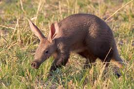

Aaradvark
Orycteropus afer

The aardvark is a medium-sized, burrowing, nocturnal mammal native to Africa. It is the only living species of the order Tubulidentata, although other prehistoric species and genera of Tubulidentata are known. Unlike most other insectivores, it has a long pig-like snout, which is used to sniff out food. It roams over most of the southern two-thirds of the African continent, avoiding areas that are mainly rocky. A nocturnal feeder, it subsists on ants and termites, which it will dig out of their hills using its sharp claws and powerful legs. It also digs to create burrows in which to live and rear its young. It receives a "least concern" rating from the IUCN, although its numbers seem to be decreasing.